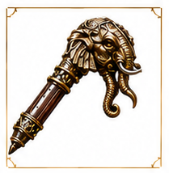

Ancient Weapon
Gajadanda

Type
War mace topped with a bronze elephant head
Ability
Seismic strike — sends shockwave through stone floors — the sound alone breaks formation. When slammed into earth, Gajasena hears it from anywhere in Hampi.
Origin
Forged from a meteor that landed in the Tungabhadra river during the reign of Krishna Deva Raya.
Modern Weapon
Gaja-Ratha — Seismic Command Mace
Type
Vibration-frequency impact staff
Ability
Resonance weapon — shatters materials by matching their resonant frequency — can bring down a reinforced building by targeting its foundation frequency.
How It Works
Emits tunable subsonic frequencies. Stone, metal, and organic matter each have resonant frequencies — the weapon finds them and amplifies. Also maps underground structures in real time.